UX/UI Design
Nucare
You, your nutritionist and your chef in one place.
Making healthy, personalized eating easier by connecting patients to chefs and nutritionists through an intuitive digital experience.
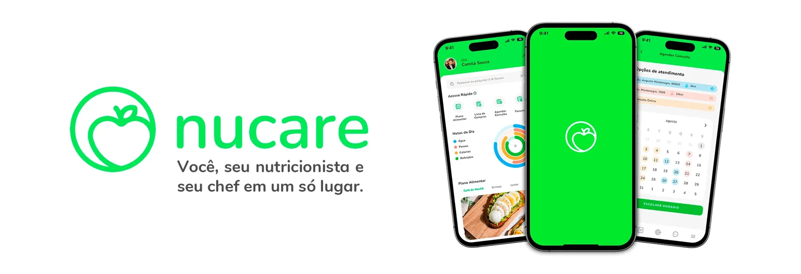
The challenge
Following a meal plan recommended by a nutritionist seems simple in theory, but in practice it is another challenge.
In the rush of daily life, there is no time to choose, buy and prepare the right ingredients. Many people start out motivated, but end up giving in to the convenience of quick options, compromising their goals.
That was the case of a client who came to us. Despite good intentions, lack of time and organization led him to slip-ups and, eventually, to abandoning the plan. His frustration reflects that of many: having nutritional guidance is not enough when your routine gets in the way of practice.
That made us wonder: what barriers make it hard to stick to a meal plan? And how can we make it more feasible and lighter for everyday life?
To answer these questions, our team set out to investigate the following challenge:
How can we increase patients' adherence to meal plans recommended by nutritionists?
Current scenario
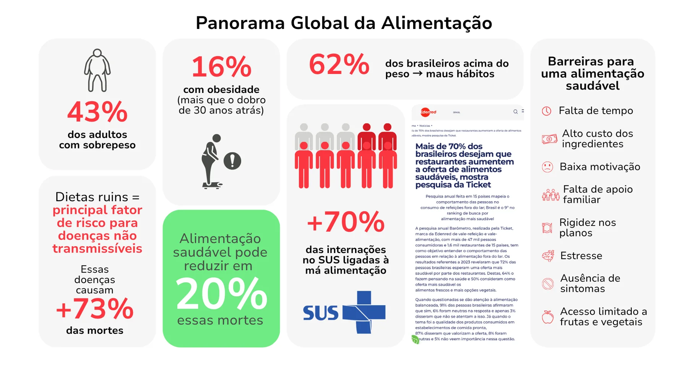
According to the 2024 Global Nutrition Report, as of 2022, 43% of adults were overweight and 16% were obese, more than double the figure of 30 years ago. Unhealthy diets are identified as the main risk factors for noncommunicable diseases, responsible for more than 73% of deaths associated with these illnesses. Improving diet quality by increasing fruit and vegetable consumption could reduce this mortality by 20%.
In Brazil, a study by Outcast Capital revealed that 62% of the population is overweight due to poor eating habits, and more than 70% of hospitalizations in the SUS (Brazil's public health system) are directly or indirectly related to poor nutrition. Despite this worrying picture, research by Ticket points to a growing awareness of the importance of a balanced diet.
However, this awareness does not always translate into real changes in eating habits. Several factors make it hard to adopt a healthier lifestyle, such as lack of time, high cost of ingredients, insufficient motivation, lack of family support, rigid meal plans, stress and the absence of alarming symptoms. In addition, the 2024 Global Nutrition Report indicates that less than half of the population has adequate access to fruits, vegetables and other nutritious foods due to economic and logistical challenges.
Solution
To face this challenge and turn knowledge into action, we created Nucare, an app that connects patients, nutritionists, chefs and couriers in a practical, efficient way. With it, users can receive healthy, ready-made meals right where they are, eliminating worries about buying ingredients, preparing and organizing meals.
The app promotes integrated communication between patients, nutritionists and chefs, allowing personalized adjustments to meal plans. It also offers a support community, where users can share experiences, swap tips and stay motivated throughout the process.
By combining convenience, personalization and ongoing support, Nucare seeks to transform the way people relate to healthy eating, making this change more accessible, sustainable and effective.
Benchmarking
To understand the market and the competition, we carried out a detailed comparative analysis of apps focused on nutrition solutions. In this stage, we mapped the main features of each platform, identifying similarities, differentiators, strengths, weaknesses and opportunities of each business:
Competitor comparative analysis
The features of the analyzed apps were consolidated in a bar chart showing the absolute and relative frequency of each feature, as shown in the image below:

Looking at the competitors above, we identified several digital solutions aimed at health and nutrition. Many apps on the market offer features such as calorie tracking, meal planning, support from nutritionists and healthy meal delivery.
There is a shortage of platforms that connect nutritionists, chefs and consumers in an integrated way. The model proposed by Nucare aims to fill this gap, offering a solution that combines nutritional consulting, real-time personalized menus and delivery from partner chefs.
SMART
To strategically understand the impact of poor nutrition on public health and the challenges faced by the population, we applied the SMART tool, a method widely used to define clear, realistic and measurable goals.
We adapted this framework to analyze recent data on eating habits and identify intervention opportunities, focused on viable and relevant solutions. Below, we present an infographic that translates this analysis visually and objectively.
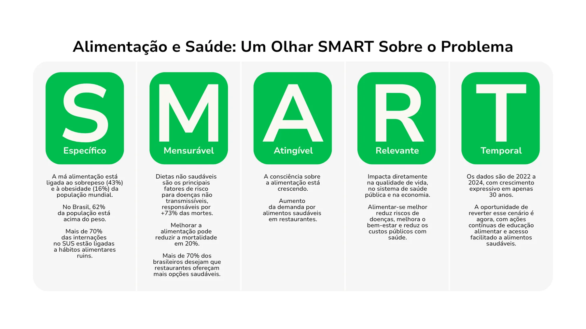
Overall goal
Increase patients' adherence to meal plans recommended by their nutritionists, by developing an app that eases access to healthy meals, communication between professionals and patients, and personalized nutrition education.
Specific goals
- Increase the availability of healthy meals, connecting patients with local chefs and suppliers to offer nutritious, affordable options, considering users' purchasing power and food preferences.
- Ease communication between patients and nutritionists, providing a direct channel to follow diets, adjust meal plans and clear up questions, based on continuous feedback.
- Ease communication between patients and chefs, allowing users to place custom orders and interact with professionals to adapt meals to their specific dietary needs.
- Increase access to quality nutrition information, offering educational content developed by nutritionists, from practical tips for improving eating to information about the benefits of specific foods.
- Encourage ongoing adherence to the meal plan, through features that keep patients motivated, such as gamification, progress tracking and the support of a community of patients who share experiences.
- Reduce cost and time barriers to following healthy meal plans, offering a practical delivery solution and making healthy food more accessible and convenient.
- Establish strategic partnerships with chefs, suppliers and health organizations, aiming to expand the app's reach and ensure the quality of the meals and content offered to users.
Implementation timeline
We set a deadline of one year for developing the app and implementing the strategies to increase patients' adherence to meal plans. This period is justified by the project's complexity and the need for careful planning. During this time, we will ensure not only the app's technical development, but also continuous testing and adjustments based on user feedback. In addition, this timeline allows for forming strategic partnerships with chefs and suppliers, building an engaged community of patients and nutritionists, and producing quality educational content. It also makes it possible to run effective marketing campaigns and gradually promote adoption of the app, ensuring ongoing evaluation and the long-term sustainability of results.
HEART
Why we chose the HEART method as the metric in our UX case
When building user-centered experiences, it is essential to adopt metrics that truly reflect the product's impact on people's lives. That is why we chose the HEART Method as the main guide for measuring experience in our project.
Besides being a structured and flexible approach, HEART lets us balance quantitative and qualitative metrics, offering a complete view of users' behavior, engagement and satisfaction.
This choice was strategic to ensure our design decisions were grounded in relevant data, focused on what really matters: people.
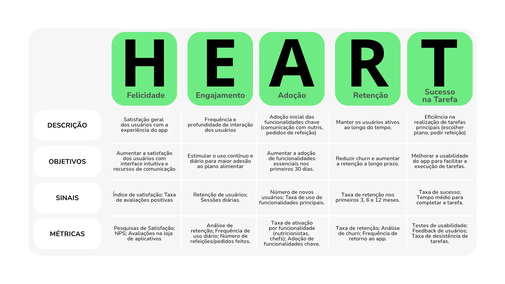
Suggested metrics that could be added
Impact metric: besides focusing on retention, engagement and adoption, it would be interesting to include metrics of real impact on users' health, such as:
- Weight loss (for weight-loss plans): tracking the health progress of users on specific diets.
- Satisfaction with health and well-being: running periodic surveys on how using the app affects quality of life.
Community metric: since the app will also promote interaction between patients, it would be interesting to measure engagement within the community:
- Number of interactions or posts in forums/communities: to monitor how users help each other.
About the tools
- Continuous usability testing with users to make sure the app is meeting their real needs.
- AARRR: can complement HEART, since it covers Acquisition, Activation, Retention, Revenue and Referral. It could be included here as a way to detail the user journey even further and how the app can generate financial or social value through ongoing engagement.
Business Model Canvas
To make sure the proposed solution was truly aligned with business goals, we chose to use the Business Model Canvas (BMC).
This tool helped us strategically visualize the main blocks that support the business model, such as value proposition, channels, revenue streams and customer segments. With it, we were able not only to understand the product's context within the company, but also to identify innovation opportunities and areas that could be optimized from the user experience. The BMC let us keep the balance between user needs and the organization's goals throughout the whole design process.
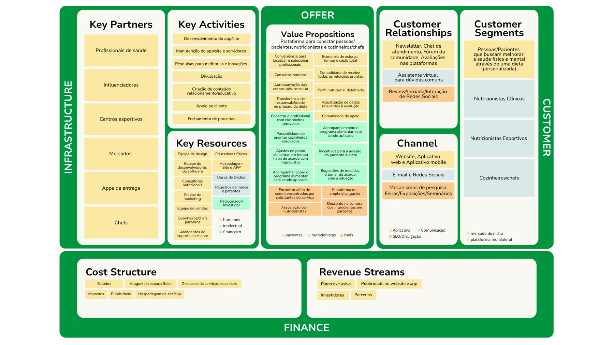
Value Proposition Canvas
The Value Proposition Canvas (VPC) was essential to deepen our understanding of what really creates value for our users. With this tool, we clearly mapped the jobs users want to get done, their pains and expected gains, connecting these insights directly to the product's value proposition.
The VPC helped us identify real opportunities for differentiation and create more relevant, targeted solutions. By placing the user at the center of decisions, we ensured the designed experience was more than functional — it was meaningful.

Quantitative research
Collecting data to support decisions
To better understand users' behavior, needs and expectations, we began our investigation with quantitative research.
We built a structured questionnaire and made it available through Google Forms, a tool that let us quickly reach a relevant number of participants and organize the data efficiently.
The responses collected were essential for identifying patterns, validating hypotheses and raising insights that guided the next stages of the project. From the analysis of this data, we created a visual, informative infographic, aiming to summarize the main findings and make the results easier to communicate.
Planning
Purpose and goals: the quantitative research aimed to collect numerical data to understand the needs, behaviors and eating habits of potential users. In addition, a screener was used to identify qualified participants for future qualitative interviews.
Participants: the research had 86 participants, including people from the researchers' social circle and students of the UX Unicórnio course.
- Inclusion criterion: people who are on a diet or trying to diet.
- Exclusion criterion: none.
Method and procedures: a 12-question questionnaire (10 closed and 2 open) was built in Google Forms, covering aspects such as demographics, food preferences, relationship with nutritionists and eating habits. The research was carried out without financial incentives.
Data analysis

Key insights
- Most participants have conventional dietary needs, but there is a significant group with specific needs.
- More than half of the participants prepare their own meals, which shows a profile of food autonomy.
- Most respondents occasionally eat frozen meals, signaling openness to ready-made but healthy products.
- Nutritional support is still little used, but the intention to seek support is high.
- Reasons for consultations reflect both aesthetic goals (weight loss, appearance) and concerns about health and physical performance.
- The predominant age range is young adults and adults between 25 and 44, a target audience with potential to engage with digital solutions.
Conclusion
The quantitative research brought valuable data that support building the user profile and their main needs. These results will guide the next stages of the qualitative research, focused on validating hypotheses and understanding eating behavior more deeply.
Impact × Knowledge Matrix
| Research area | Impact | Knowledge | Priority action |
|---|---|---|---|
| Acceptance of the hybrid model (remote + in-person nutritional support). | High | Low | Conduct targeted research on support preferences (remote, in-person or hybrid). |
| Real barriers to adopting food-health technologies across different age groups. | High | Low | Investigate more deeply users' digital habits and their difficulties with the app and delivery. |
| Preference for WhatsApp as the main communication channel with nutritionists, instead of dedicated apps. | High | Low | Evaluate why WhatsApp is preferred (convenience, familiarity, etc.) and how to integrate this preference into the solution. |
| Most effective channels to engage and retain users in the continued use of nutrition technologies. | High | Low | Run communication tests (A/B testing, for example) or specific interviews with users. |
Main focus for research
Based on the matrix, areas with the highest impact and lowest knowledge should be prioritized. In our case, these areas are:
- Acceptance of the hybrid model of nutritional support.
- Barriers to adopting food-health technologies.
- Effective channels to engage and retain users.
- Create an integration between the app and WhatsApp, enabling easy transitions between platforms.
- Incorporate WhatsApp-like features into the app, such as instant messaging or reminders, while keeping the app as the main tool.
- Understand the barriers to using a dedicated app, such as complexity or lack of trust, and develop strategies to overcome them.
Qualitative research
The qualitative research sought to explore in depth users' motivations, perceptions and experiences regarding eating habits, diets and nutritional support. This stage complements the quantitative data, providing detailed insights into participants' needs and pains.
The main goals include:
- Understanding the challenges faced when adopting healthy eating.
- Identifying motivations and barriers to using solutions such as nutrition apps.
- Exploring participants' emotional relationship with eating habits and diets.
Participants
Participants were selected based on the quantitative research criteria, prioritizing those who:
- Participants who are patients of nutritionists;
- Participants who are nutritionists;
- Participants who are chefs;
- Are on a diet or trying to diet;
- Showed interest in taking part in interviews.
Number of participants: 10 to 15 people (based on the data saturation principle), consisting of 6 patients, 4 nutritionists and 3 chefs.
Sample diversity: balance across gender, age range and eating motivations (weight loss, health, aesthetics, etc.).
Method and procedures
In-depth interviews
- Duration: 40 to 60 minutes.
- Format: online (via video conference) or in person, depending on the participant's preference and the interviewer's availability.
Tools used
- Google Calendar scheduling system so interviewees could choose the best times.
- Google Meet to record the interviews (with an accepted consent form authorizing the use of image and voice for research purposes);
- Notepad / Word and an automatic transcriber to collect insights.
Interview script
Interview with patients
Access to the detailed interview file (template): Patient Interview. Divided into sections:
- Introduction (presentation, goals and consent).
- Eating routine and consumption habits.
- Perceptions of nutritional support and diets.
- Experiences with technology (apps, delivery, recipes, etc.).
- Motivators and barriers on the healthy-eating journey.
Interview with nutritionists
Access to the detailed interview file (template): Nutritionist data sheet. Divided into sections:
- Introduction (presentation, goals and consent).
- Professional experience.
- Patients' challenges and needs.
- Diverse meal plans.
- Technology and personalization.
- A solution that unifies nutritionists + chefs + patients.
- Feedback and continuous learning.
- Closing.
Interview with chefs
Access to the detailed interview file (template): Personal Chef Interview data sheet. Divided into sections:
- Introduction (presentation, goals and consent).
- Professional experience.
- Client profile.
- Menu personalization.
- The chef's routine.
- Help with tasks.
- Buying ingredients.
- Hygiene and food safety.
- Meal packaging.
- Meal deliveries.
- Problem solving.
- Relationship with nutritionists.
- Technology, apps and social media.
- Client reviews.
Data analysis
In total, 13 participants were recruited for the interviews. After the interviews, the data was collected, organized and analyzed following the steps below:
- Transcription and organization: transcribing the interviews for detailed analysis and organizing the data into categories and themes, with tools such as Word, Excel, Miro, Figma and ChatGPT-4.
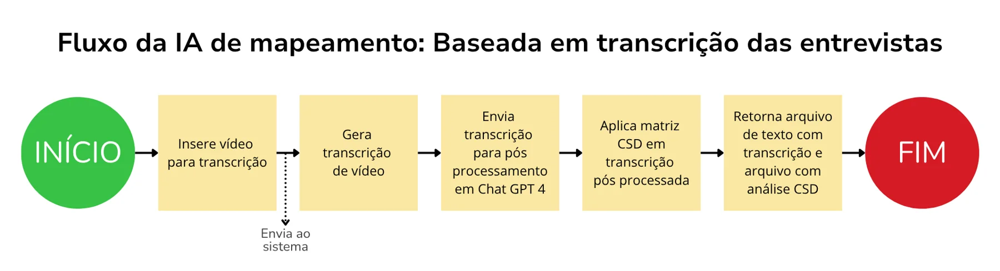
- Thematic coding: identifying recurring patterns and themes in participants' statements. This stage guided us toward the Writing part.
- Interpretation of results: connecting the qualitative themes with the quantitative data.
Key insights
This report complements the quantitative data already gathered, bringing a deeper analysis of motivations, barriers and expectations related to eating habits and nutrition solutions. It also guides the next stages of the project, based on the main impact points identified in the CSD Matrix.
Key findings
1. Motivations for healthy eating
- Health and well-being were the main motivations, followed by weight loss and aesthetic concerns.
- Concerns about diseases such as diabetes and hypertension came up repeatedly.
2. Barriers to implementing healthy habits
- Lack of time, high cost and lack of practical knowledge were the main obstacles.
- Even with nutritional guidance, most people find it hard to stay consistent.
3. Perceptions of nutritionists and diets
- Professional support is valued, but considered not very accessible or hard to maintain.
- Diets are seen as restrictive and not very adaptable to daily life.
4. Relationship with technology and digital solutions
- There is clear interest in apps with meal planning, calorie counting and personalized guidance.
- Healthy meal delivery is well regarded, as long as it is affordable.
- Integrations with WhatsApp or similar features (messages, reminders) can ease engagement.
Conclusion
The qualitative research reinforces the CSD Matrix data, highlighting the audience's main pains and expectations. The acceptance of technology, combined with classic barriers such as time and cost, points to a real opportunity for innovation.
CSD Matrix
| Certainties | Assumptions | Doubts |
|---|---|---|
| Most participants seek healthy eating for health and well-being reasons. | Participants are willing to pay more for solutions that save time and offer convenience. | How can we make sure the digital experience (app, delivery, etc.) is truly intuitive and accessible for everyone? |
| Many participants struggle to maintain a healthy diet due to lack of time and knowledge. | Personalized nutritional support through an app will be well received by users. | What are the real barriers to adopting food-health technologies across different age groups? |
| There is demand for practical, accessible solutions, such as delivery and meal planning. | The high cost of healthy meals can be a barrier for many users, but it can be minimized with solutions such as partnerships or promotions. | What is the best way to communicate the benefits of healthy eating to different user profiles (for example, those seeking weight loss vs. those seeking health)? |
| The predominant age range of participants is between 25 and 44, with high demand for diets for weight loss and health maintenance. | Technology solutions (such as apps) can integrate well with professional nutritional support. | How well accepted is a hybrid model (remote and in-person nutritionist)? Will remote support be effective? |
| Most participants value nutritional support for weight loss and for maintaining a healthy life. | The convenience of quick solutions (delivery, apps) can increase adherence to healthy eating habits, even at higher costs. | What are the best channels to engage users in the continued use of nutritional-support technology? |
Solution
- Develop a complete app, with features such as meal planning, remote nutritional support and practical tips.
- Invest in time-saving solutions, such as easy recipes and partnerships with delivery services.
- Create a bridge between the app and WhatsApp, promoting a smoother, more familiar experience.
- Test different engagement strategies for audiences who have never consulted nutritionists, such as light, gamified content.
- Educate and empower the user, offering clear, practical and motivating content about healthy eating.
Persona mapping and creation
After the research phase, we began mapping as an essential step to turn data into practical direction. We created 3 representative personas based on the information collected, translating real behaviors, needs and motivations of users. This process helped us see patterns, put a face to the mapped pains and stay focused on who will actually use the solution.
Patient, nutritionist and chef

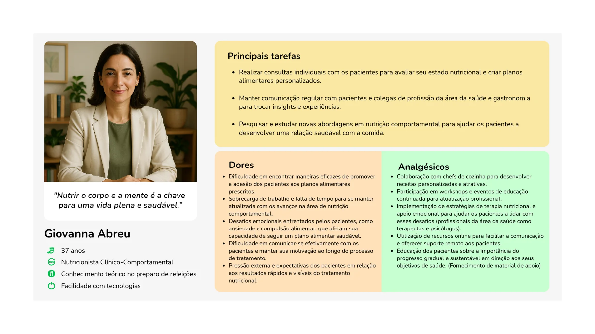
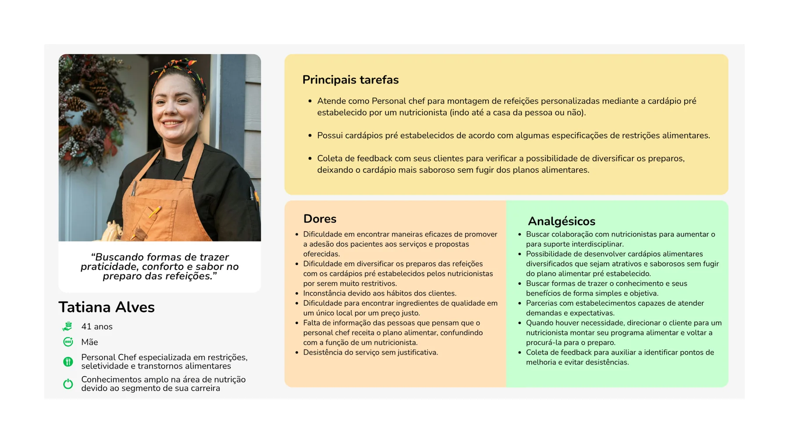
User journey
With the personas defined, we traced each one's journey to understand how they relate to the platform at different moments. This mapping let us visualize the whole path — from first contact with the solution to completing an action — identifying critical points, barriers and opportunities. With that, we created a strategic foundation for developing more intuitive, fluid experiences aligned with the project's expectations.


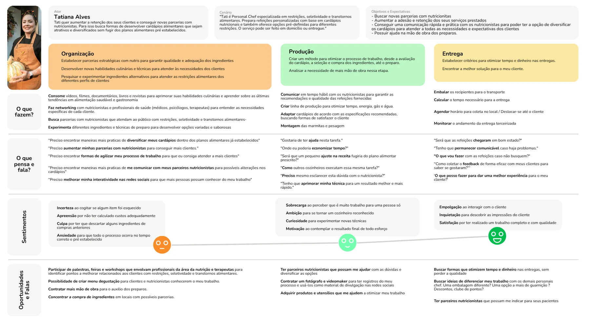
Solution Flows
Considerations for developing the solution
From the data and insights collected in the research phases, the following essential points stand out to guide the building of the solution:
Integration with communication channels users already use
- Enable integration between the app and WhatsApp, promoting a smooth, friendly experience.
- Allow sending notifications, reminders and interactions through the app or WhatsApp, respecting the user's preference.
Accessibility and simplicity in the interface
- Design intuitive navigation, with usability geared especially to people with low familiarity with technology.
- Prioritize essential features — such as nutritional support and meal planning — before moving on to more complex ones.
Personalization of experiences and services
- Adapt recommendations, content and nutrition plans to users' goals and health conditions, such as weight loss, hypertension, diabetes, among others.
Ease of adoption and encouragement to keep going
- Implement strategies that encourage initial adoption, such as free trials or benefits on first consultations.
- Adopt features that encourage ongoing engagement, such as gamification, weekly goals and rewards.
Creating an ecosystem through strategic partnerships: establish collaborations with nutritionists, gyms, restaurants and healthy-food companies to enrich the value offered to users and strengthen the solution's presence in the market.
Identified opportunities
Adopting WhatsApp as a relationship channel
The preference for WhatsApp represents an opportunity to integrate direct communication features into the app, or even create automated flows that use the platform as a point of contact.
Healthy eating made practical
Many users turn to frozen or home-cooked meals. There is room to offer healthy-eating kits, easy recipes, shopping planning and even partner delivery, easing everyday food decisions.
Segmentation by specific health conditions
Creating solutions for groups with specific needs, such as people with diabetes or hypertension, can generate higher perceived value and expand the base of engaged users.
Search for personalization and constant support
The demand for individualized guidance and ongoing support opens room for features such as remote follow-up, personalized alerts, educational content and contact with professionals.
Hybrid model as a competitive differentiator
Acceptance of the hybrid model (in person + online) is an established trend. With the support of technology, it is possible to offer a more flexible, human and effective experience, connecting users and nutritionists more closely.
Workshops
During the project, we held two collaborative workshops that were key to aligning perspectives, generating insights and strengthening design decisions: the Lightning Decision Jam (LDJ) and the Personas workshop.
Both sessions were run with a focus on creating a safe, participatory environment, involving the whole team and ensuring equal space for active listening and contribution of ideas. The approach used allowed objective, collective ideation, making it easier to unblock obstacles and clearly define the project's next steps.
Each workshop had well-defined goals and expectations aligned beforehand, which contributed to building solutions more consistent with the real needs of users and the business. Below, we present the records and learnings from each stage.
Prioritization
From problem to opportunity: questions that guide the solution design
From the analysis of the research data (quantitative and qualitative), insights from the CSD Matrix and the mapping of user pains and the main challenges users identified, we prioritized four core problems that directly affect adherence to healthy eating habits and the use of digital solutions in nutrition:
Priority problems
Based on the analysis of the research data:
- Lack of time to maintain healthy eating.
- Perceived high cost of healthy food.
- Lack of accessible, continuous nutritional support.
- Low adoption of digital solutions due to difficulty of use or distrust.
Why did we prioritize these problems?
- They were recurring in the responses of the research.
- They represent real barriers to the user's experience and success.
- Solving these pains can increase adoption of the solution and generate concrete value.
How Might We…
Questions that guide the solution design:
- How might we integrate the convenience of WhatsApp with the features of an app for nutritionists?
- How might we make the use of food-health technology simpler and more motivating for different ages?
- How might we personalize the experience, serving everything from general goals (e.g. weight loss) to specific needs (e.g. restrictive diets)?
- How might we improve communication between nutritionists and patients with efficiency, security and privacy?
- How might we make healthy eating more practical and accessible, even with ready-made meals or delivery?
- How might we engage users in the continued use of the solution in a motivating, rewarding way?
- How might we support nutritionists in using the tool so they see real value and integrate it into their professional practice?
Solution prioritization
Among all the ideas raised, we selected the solutions that are most feasible, relevant and with the greatest potential impact for the user.
Prioritized solutions
- App with meal planning, reminders and remote support features.
- WhatsApp integration to ease engagement and communication.
- Partnerships with nutritionists, gyms and healthy-food services.
- Personalization system based on goals and health conditions.
Rationale
- They are solutions directly connected to the problems identified.
- They help reduce barriers such as time, cost and disorganization.
- They support ongoing engagement and a smoother experience.
Feature prioritization
Features defined for the MVP
- Personalized meal planning.
- Goal tracking and eating habits.
- Notifications and reminders (app + WhatsApp).
- Chat with a nutritionist (or chatbot for basic questions).
- Quick, affordable recipe recommendations.
Rationale
- They are features that solve the most urgent pains.
- They have the potential for high perceived value right from the first use.
- They can be implemented with technical resources feasible for an MVP.
Roadmap and MVP scope
What was done: we defined the initial scope focused on fast, high-impact deliveries. The MVP (Minimum Viable Product) will be tested to validate hypotheses.
MVP scope
- App with sign-up and basic nutritional profile.
- Weekly meal planning with automated suggestions.
- Goals and reminders system.
- Communication channel with the nutritionist via WhatsApp.
- Library of healthy recipes filtered by goal.
Writing: the Nucare voice
To adapt Nucare's positioning to each of our user profiles — patients, nutritionists and cooks — we drew on interviews with volunteers who represent these groups, complementing the research already done. The intention was to extract relevant information from recurring or emphasized vocabulary terms.
Word cloud

Voice principles
Based on our users' needs, we highlighted the following voice characteristics to establish a consistent communication standard:
- Caring: we want to be an attentive presence for our users, anticipating and preventing problems, and helping ease health-related worries and anxieties so they feel supported on their journeys.
- Reliable: we aim to offer a solid, secure platform where our users perceive, and can turn to whenever they need, accurate and up-to-date information about their nutrition programs, minimizing uncertainty and providing stability in follow-up.
- Motivating: we want to inspire and motivate our users to stick to the meal plan and reach their health and well-being goals, encouraging autonomy and self-sufficiency, and helping overcome the obstacles and challenges that may arise along the way.
These are the principles that guide our approach. From them, we adjust the tone appropriate to each situation.
Tones of voice
Patients
Communication that isn't natural can make a person on a diet see nutritional support as an imposing, strict and unsustainable package. To help them feel at ease, we make the language more relaxed, but without exaggeration, to preserve the message's credibility and avoid an artificial tone. We try to strike a balance between the patient's need for support and need for autonomy, so they feel welcomed and accompanied without feeling pampered or watched.

Nutritionists
When addressing nutritionists, our priority is to establish clear, objective and professional communication, similar to the interaction between colleagues in the field. This means we try to avoid excessive technical terms and instead use practical language that allows an uncomplicated exchange of information and efficient understanding.

Chefs
For cooks, although many work informally, we identified that professionals in the field seek appreciation and recognition. Therefore, our approach is respectful and formal, to match this aspiration for greater recognition. However, we again avoid overly technical vocabulary, because we want all cooks, regardless of their background, to feel welcomed and comfortable with the language we use.
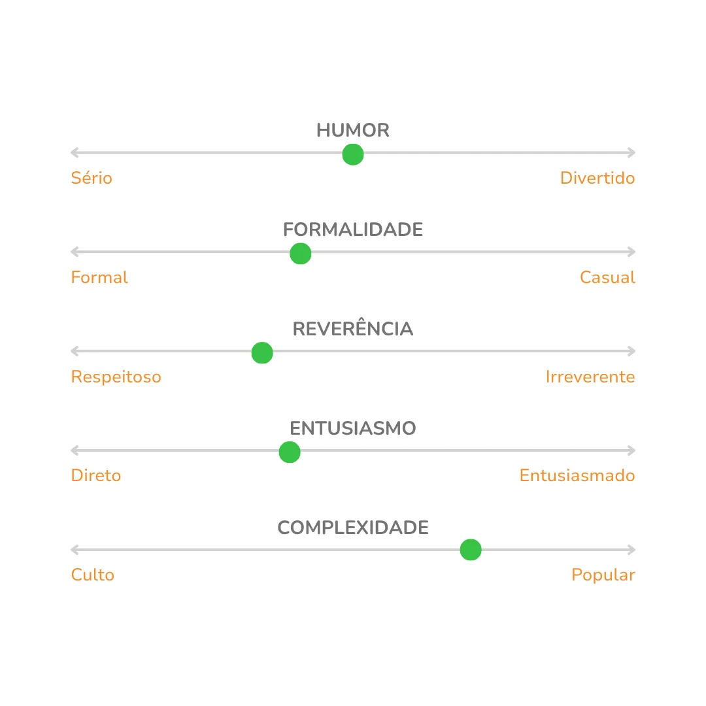
Card sorting
To define the ideal terms for navigation and interaction in the app, we follow convention whenever appropriate, aiming not to create unnecessary doubts. In addition, we surveyed the terms that generated the most uncertainty and then tested them with potential users, determining which terms are most intuitive and suitable for use.

Interface
With users' needs clearer after the previous stages, we began defining the product's interface and visual identity. The final solution will be an app, developed from the insights and learnings drawn throughout the research, focused on delivering a user-centered experience and increasing the service's effectiveness.
In this phase, besides the activities for ideating the screens, the project's Design System was also created, establishing visual and functional standards to ensure consistency. Also at this point, we ran usability tests with users, an essential step to validate whether the proposed flow truly simplifies the user journey and meets the audience's expectations.
Conception — sketch
We defined the initial scope focused on fast, high-impact deliveries. The MVP (Minimum Viable Product) was tested to validate hypotheses:
- Library of healthy recipes filtered by goal
- Communication channel with the nutritionist via WhatsApp
- Goals and reminders system
- Weekly meal planning with automated suggestions
- App with sign-up and basic nutritional profile
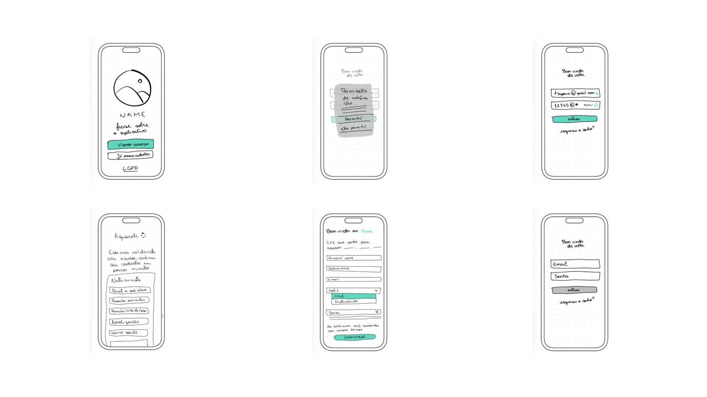


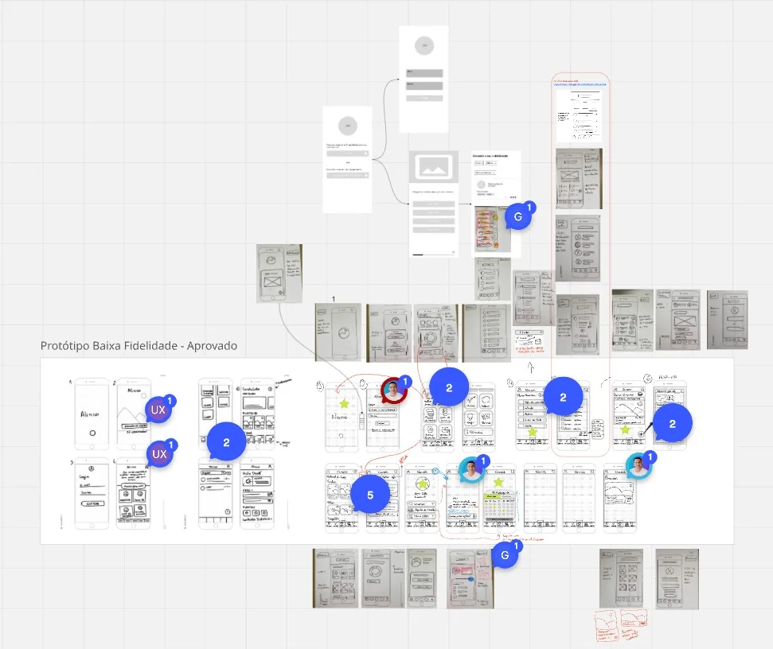
Style guide
For developing the high-fidelity prototype, it was essential to define a consistent, attractive visual identity. From that, we created the app's Style Guide, which sets clear guidelines for using all of the interface's graphic elements.
This guide aims to ensure visual consistency and guide both the design and users' interaction experience with the product. The colors were carefully chosen to be vibrant and engaging, contributing to more pleasant, intuitive navigation.
Brand
Our brand name, “Nucare”, comes from combining the words “Nutrição” (nutrition) and “Care”. This combination reflects the essence of the app: promoting health care through balanced eating and an active lifestyle.
We chose a name with international appeal, aiming to extend the solution's reach beyond the Brazilian market. We believe the benefits the app offers meet universal needs, allowing the brand to connect with users across different cultures and regions of the world.
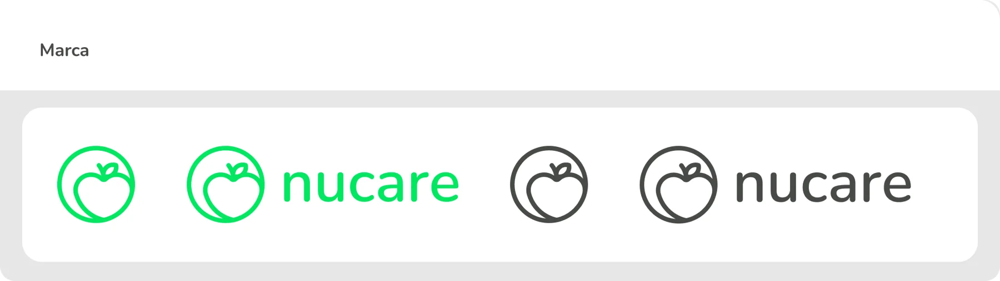
Color palette
The color choice was inspired by visual references from healthy-eating apps, natural and organic products, and health-focused platforms.
The palette is centered on an intense green as the primary color, accompanied by its tonal variations. This choice conveys freshness, vitality and well-being, values directly associated with the app's proposal.
The secondary and supporting colors were carefully selected to complement the main color, creating harmonious contrasts that make reading easier, highlight important information and contribute to a pleasant, functional visual experience.

Typography
We chose a typeface with clean, rounded strokes, with no details at the ends of the letters, which reinforces the app's modern, accessible style. This choice echoes the organic shapes of the logo, conveying a sense of warmth and lightness. It also provides easy, fluid reading, adapting well to different interface elements such as titles, descriptions and buttons.
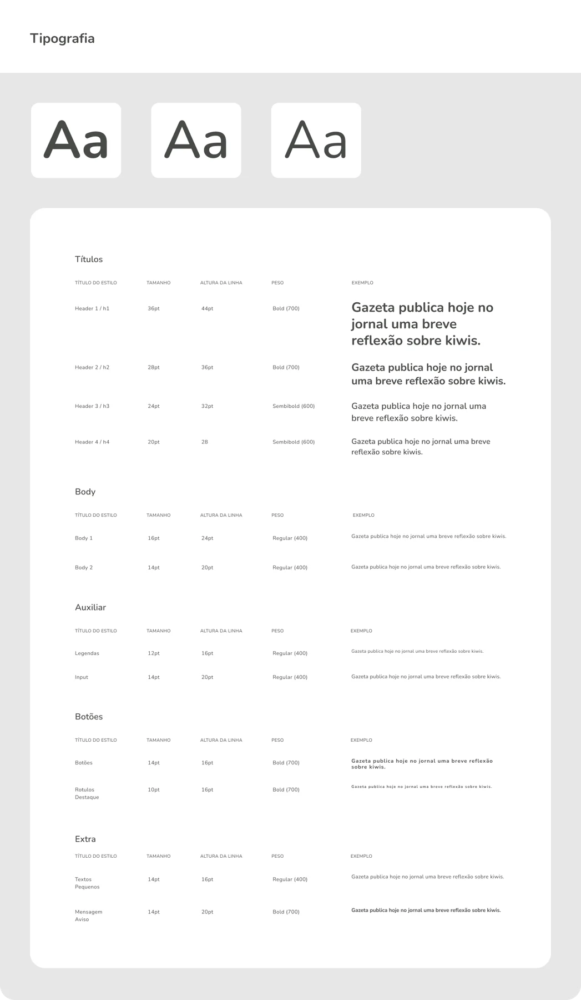
Buttons
We developed different button styles, each with a well-defined visual hierarchy, letting users easily identify the actions available in each navigation context. Versions were created for primary, secondary and disabled actions, with variations in color, shape and fill, ensuring clarity, accessibility and consistency in interacting with the app.
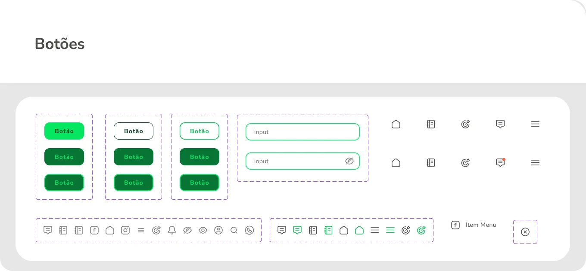
Wireframe
From the first sketches (low-fi wireframes), we started creating the mid-fidelity prototype, also beginning to structure the solution's visual identity.
We used Miro to organize and validate the initial layout and flow ideas. After that stage, we moved on to Figma, where we refined the visual choices and developed the prototype with more precision and cohesion, bringing it closer to the expected final experience.
High-fidelity prototype
Based on the learnings from the earlier stages of the mid-fidelity prototype, we developed the high-fidelity prototype, seeking to realistically simulate the end user's experience.
In this stage, we applied the defined visual identity, improved the interface elements and adjusted the navigation flows to ensure clarity, usability and consistency. The goal was to bring the solution as close as possible to the final version, enabling more precise tests and better-qualified feedback.
Navigation flow
Usability tests
With the prototype finished, we began an essential stage of the process: understanding how users interact with the solution and identifying possible obstacles in their experience.
For this, we applied two complementary testing methods: Thinking Aloud and Heat Map.
Thinking Aloud at mid-fidelity
A simple, effective technique in which users share their thoughts out loud during the interaction. This approach is accessible, flexible and lets us gain valuable insights into perceptions, difficulties and decision-making in real time.
Heat map at high fidelity
It helped us with the main task flow, analyzing visual behavior and clicks in the main navigation flow.
We used the Maze platform and invited 13 users to take part in a usability test. We provided some screens for flow validation and asked them to perform a few tasks, in order to assess how users interact with the prototype, identifying click patterns and opportunities to improve the interface's usability.
- Number of participants: 22.
- Average duration: 33.2s.
- Success rate: 95,5%.
Task 1 - Filter service options by location


- Success rate: 100%
- Misclick rate: 57.1%
- Observed patterns: some scattered clicks, regarded as curiosity about how the calendar/app works.
Task 2 - Start scheduling for a specific date and time


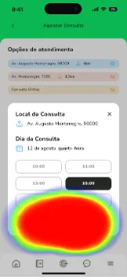
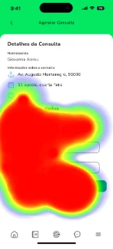
- Success rate: 95.2%
- Misclick rate: 64.6%
- Observed patterns: some scattered clicks, regarded as curiosity about how the calendar/app works.
Task 3 - Cancel a scheduled appointment
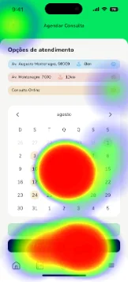
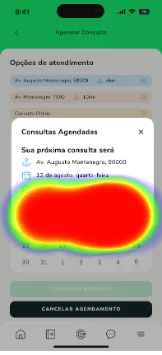

- Success rate: 100%
- Misclick rate: 34.8%
- Observed patterns: some scattered clicks, regarded as curiosity about how the calendar/app works.
Task 4 - Yes/No question
Were the information, buttons and icons clear and easy to understand?

Task 5 - Open question
Question: would you like to share any other comments or suggestions about the experience of use?
Positives
- Intuitive, clear interface: participants C, F and G praised the simplicity and clarity of the navigation. This shows the overall structure is working well for a good part of the audience.
- Clarity and simplicity: participant C highlighted that everything was “very simple and didactic” — an excellent sign that the flow is functional.
Points of attention
- Lack of visual feedback when selecting the day: participants A and E mentioned difficulty knowing whether the day was actually selected. This indicates the active (selected) state needs more visual emphasis — perhaps a more contrasting color, an outline, or a light transition animation. We also noticed that, although our prototype has this component with animation, Maze was not able to reproduce the selected-item option.
- Confusing first step with addresses: participant B reported initial confusion. This may indicate that the information hierarchy or the field/address labels are not clear enough.
- Calendar with confusing times and use of legends: participant D found the presentation of all the times together confusing, and the “coletes” (probably a typo for colors or legends) looked like buttons. This may point to a visual semantics problem: what should be a legend looks like a button. In addition, there may be high cognitive load from showing all times at once.
Heat map insights
The Maze platform counts as misclicks those made outside the prototype's interactive areas or focus points. In our case, we noticed that many of these clicks happened because of users' curiosity to explore how the interface works, testing different areas of the screen to see whether certain actions were available.
Conclusion
The test proved essential for understanding user behavior during the appointment-scheduling flow. It validated that the current layout draws attention to the main CTAs, but there is room for improvement in clarity and navigation.
From this test, it was possible to identify important usage patterns. This kind of insight reinforces the importance of a detailed analysis of the results, going beyond raw numbers and considering the context of the actions.
Based on the learnings, we were able to adjust points of confusion in the journey, think of improvements to the experience and take an important step toward building a more functional, intuitive high-fidelity prototype aligned with users' real needs.
Next steps of our case
- Run an A/B test with two versions of the menu;
- Do card sorting with users to validate content categorization;
- Test the AI function as a search bar in the prototype, observing whether it helps navigation;
- Continue the usability prototype stage for the Chefs;
- Conduct new rounds of research and testing with nutritionists, with a specific focus on the “Meal Plan” section, in order to identify improvements related to the presentation and understanding of nutritional information. The goal is to simplify data that may raise doubts or hinder navigation — both when the professional fills it in and when the end user interprets it. Items such as macronutrients, macrominerals and vitamins should be evaluated for relevance, visual hierarchy and clarity of the information presented.
High-fidelity navigation prototype